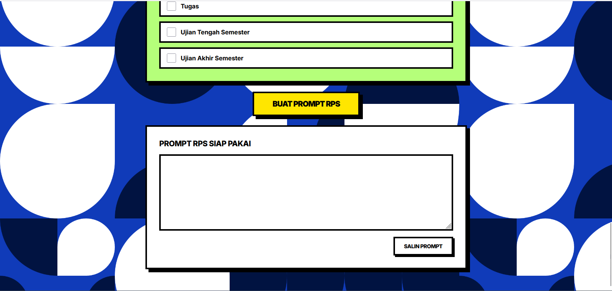
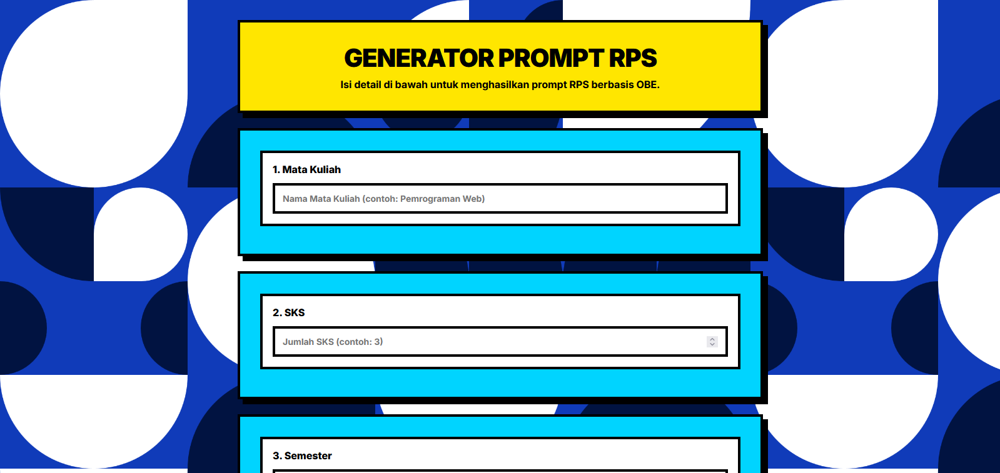

Tool berbasis web untuk membantu dosen menyusun prompt Rencana Pembelajaran Semester berbasis Outcome-Based Education yang siap pakai di ChatGPT.

Menyusun RPS berbasis OBE adalah tugas wajib yang memakan waktu berhari-hari. Dosen harus merumuskan CPL, CPMK, Sub-CPMK, bahan kajian, hingga kriteria penilaian — lalu menuangkannya ke dalam prompt yang tepat agar AI bisa menghasilkan RPS yang sesuai standar.
Generator Prompt RPS hadir untuk menyederhanakan proses ini. Cukup isi form terstruktur, dan aplikasi akan merangkai prompt siap pakai yang bisa langsung kamu gunakan di ChatGPT atau AI lain.
Mempercepat penyusunan prompt RPS berkualitas tanpa perlu menulis ulang struktur berulang kali.
Dosen, Koordinator Prodi, dan Tim Kurikulum yang menyusun RPS berbasis OBE.
Hasilkan prompt dalam hitungan detik. Tidak perlu mengetik ulang struktur RPS.
Bisa digunakan dari laptop, tablet, maupun HP. Tampilan tetap rapi.
Aplikasi berjalan sepenuhnya di browser. Data tidak dikirim ke server mana pun.
CPL, CPMK, Sub-CPMK, Bahan Kajian, hingga Kriteria Penilaian dalam satu form.
Prompt dioptimalkan untuk RPS berbasis Outcome-Based Education sesuai standar.
Satu klik salin, langsung paste ke ChatGPT. Tidak perlu edit ulang.
Input mata kuliah, SKS, dan semester dengan cepat. Data akan otomatis tersusun dalam prompt.
Tambah kode dan keterangan CPL, CPMK, dan Sub-CPMK secara dinamis. Bisa hapus jika tidak diperlukan.
Daftar bahan kajian yang relevan dengan mata kuliah. Bisa ditambah dan dihapus sesuai kebutuhan.
Centang jenis penilaian (Aktivitas, Proyek, Kuis, Tugas, UTS, UAS) dan masukkan persentase bobot masing-masing.
Semua data dirangkai menjadi prompt terstruktur yang siap digunakan di AI manapun.
Tombol salin otomatis menyalin seluruh prompt ke clipboard. Tinggal paste dan jalankan.

| Role | Hak Akses | Deskripsi |
|---|---|---|
| Dosen | Penuh — semua fitur | Menyusun prompt RPS untuk mata kuliah yang diampu |
| Kaprodi | Review & Validasi | Memeriksa dan memvalidasi RPS yang disusun dosen |
| Admin | Manajemen template | Mengelola template CPL/CPMK dan referensi penilaian |
Form identitas MK, SKS, semester — data dasar yang akan menjadi header prompt.
Tambah, edit, dan hapus Capaian Pembelajaran secara dinamis tanpa batas jumlah.
Pilih jenis penilaian dan tentukan bobot persentase masing-masing komponen.
Rangkai semua data menjadi prompt terstruktur, salin dengan satu klik.
HTML5 + CSS3 + Vanilla JS
Tidak diperlukan — 100% client-side
Zero database — tidak ada penyimpanan data
No framework — murni vanilla
Static hosting — GitHub Pages / Netlify
Zero dependencies — tidak ada pihak ketiga
Inter (Google Fonts)
Emoji (fallback, tanpa lib tambahan)
Penjelasan: Aplikasi berjalan sepenuhnya di browser. User mengisi form, JavaScript memproses data menjadi prompt terstruktur, lalu user menyalin prompt ke ChatGPT. Tidak ada server, database, atau API eksternal yang diperlukan.
Generator Prompt RPS tidak menggunakan database. Semua data diproses dan ditampilkan di browser tanpa disimpan ke server mana pun. Ini berarti:
Aplikasi ini berjalan 100% di sisi klien tanpa backend atau API eksternal. Tidak ada endpoint, request, atau response — cukup buka file HTML dan gunakan.
Catatan: Arsitektur ini membuat aplikasi sangat ringan, aman, dan mudah dihosting di mana saja (termasuk GitHub Pages, Netlify, atau folder lokal).
git clone https://github.com/user/prompt-rps.git
cd prompt-rpsAtau download ZIP dan ekstrak ke folder lokal.
buka index.html
# atau double-click fileTidak perlu server. Cukup buka langsung di browser.
# GitHub Pages
git push origin main
# Netlify
netlify deploy --prod --dir=.Bisa juga upload folder ke hosting statis manapun.
| Kategori | Minimum | Rekomendasi |
|---|---|---|
| Browser | Chrome 60+, Firefox 60+, Edge 80+ | Chrome 100+ / Firefox 100+ |
| Koneksi | Tidak diperlukan (offline) | Tidak diperlukan (offline) |
| Storage | 1 MB | 1 MB |
| RAM | 64 MB | 128 MB |
| Hosting | Static hosting / file lokal | GitHub Pages / Netlify / Vercel |
Semua data diproses di browser. Tidak ada data yang dikirim ke server.
Tidak ada cookie, tracker, atau analytics. Privasi pengguna sepenuhnya terjaga.
Data tidak disimpan. Tutup tab, data hilang. Aman dari kebocoran data.
Bisa dihosting dengan HTTPS untuk koneksi aman.
Tanpa library eksternal — mengurangi permukaan serangan.
Browser sandbox memberikan lapisan keamanan tambahan.
Ukuran file ~10 KB. Muat dalam milidetik.
Berjalan offline penuh setelah halaman dimuat.
CSS ringan, tanpa framework berat. Animasi zero.
Proses generate selesai dalam <1 ms.
Satu file HTML kecil. Tidak ada bundle atau chunk.
Tanpa framework, tanpa virtual DOM overhead.
Generate prompt dasar. Form CPL, CPMK, Sub-CPMK, penilaian.
Export PDF/DOCX. Preview prompt. Template kustom.
Multi bahasa. Autosave. Manajemen mata kuliah. Integrasi AI.
Kolaborasi tim. API endpoint. Template sharing.
Generator Prompt RPS dirilis di bawah lisensi MIT. Kamu bebas menggunakan, memodifikasi, mendistribusikan, dan menggunakan untuk keperluan komersial.
MIT License
Copyright (c) 2025 Generator Prompt RPS
Permission is hereby granted, free of charge, to any person obtaining a copy
of this software and associated documentation files...